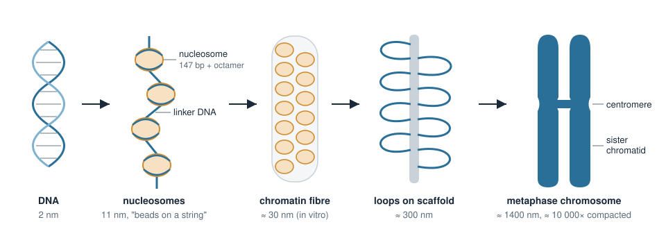
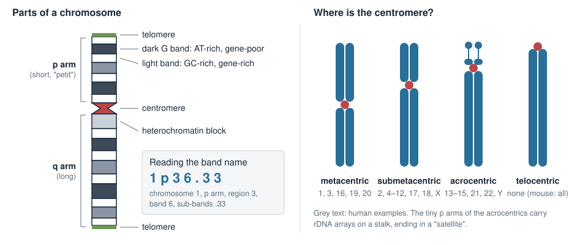
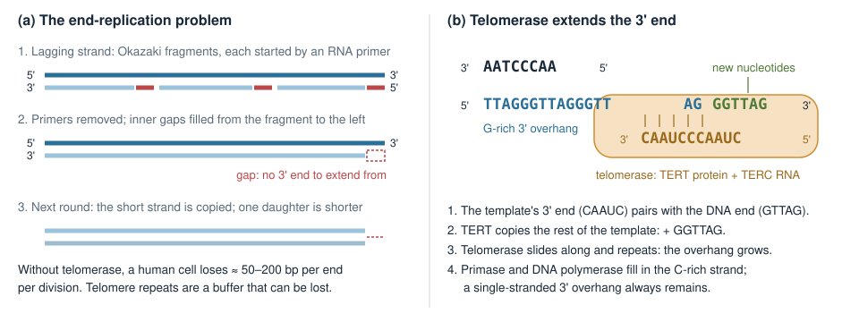
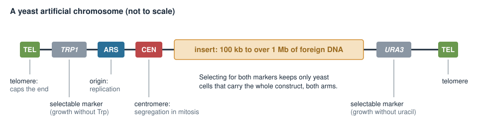
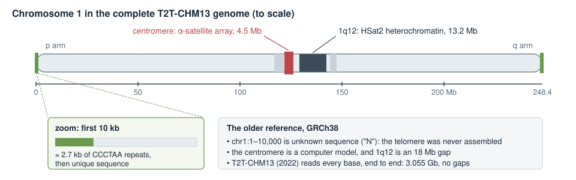

Part 5: Chromosomes in detail. Chromatin, bands, centromeres, telomeres and the complete human genome
Basic and molecular genetics (5MO104)
About this lecture
In Part 2 a chromosome was a line with genes on it, and meiosis moved those lines around. This lecture looks at the physical object: a single, very long DNA molecule packed with proteins, with special sequences that let it be copied and segregated without falling apart.
Chromatin: how 2 m of DNA fits in a nucleus; nucleosomes and higher-order packing.
Euchromatin and heterochromatin, and what happens to a gene moved next to heterochromatin.
Banding and karyotypes: how chromosomes are recognised and named (1p36.33, 47,XY,+21).
Centromeres: the attachment point for the spindle.
Telomeres: why linear ends are a problem, and how telomerase solves it.
What a chromosome needs: yeast artificial chromosomes.
The telomere-to-telomere (T2T) human genome, which finally sequenced centromeres and telomeres.
Book: Hartwell, Genetics: From Genes to Genomes, the eukaryotic chromosomes chapter.
The packaging problem
Number
Haploid human genome (T2T-CHM13)
3.055 × 109 bp
Diploid nucleus
≈ 6.1 × 109 bp in 46 molecules
Length of B-DNA
0.34 nm per bp
Total DNA per diploid nucleus
≈ 6.1 × 109 × 0.34 nm ≈ 2 m
Diameter of a nucleus
≈ 5–10 µm
Chromosome 1 (248 Mb) as naked DNA
≈ 8.4 cm
Chromosome 1 at metaphase
≈ 10 µm
The DNA must be compacted about 10 000-fold at mitosis, yet stay readable for transcription and replication in interphase. Chromatin solves both problems.
Nucleosomes: the first level of packing

A nucleosome core is 147 bp of DNA wrapped about 1.7 turns around a histone octamer: two each of H2A, H2B, H3 and H4.
Linker DNA (about 20–80 bp) joins the cores; histone H1 binds where DNA enters and leaves. One nucleosome per ≈ 200 bp.
Histones are small, very basic (Lys, Arg) proteins: their positive charge binds the negative phosphate backbone. They are among the most conserved proteins known.
Euchromatin and heterochromatin
Euchromatin
Heterochromatin
Packing in interphase
open, decondensed
compact, stains darkly
Genes
gene-rich, mostly active
gene-poor, mostly silent
Replication
early in S phase
late in S phase
Typical histone marks
acetylation, H3K4 methylation
H3K9 methylation + HP1 protein
Examples
most of the chromosome arms
centromeres, telomeres, 1q12, 9q12, Yq12
Constitutive heterochromatin is always condensed, in every cell: mostly repetitive satellite DNA around centromeres.
Facultative heterochromatin is condensed in some cells only. The best-known example is the inactive X in female mammals (Part 6).
Position effect: heterochromatin can spread
In Drosophila, the inversion In(1)wm4 moves the eye-colour gene white+ from the euchromatin of the X to a spot next to the centromeric heterochromatin.
The white+ allele is unchanged, but the eye is mottled: red and white patches.
In some cells heterochromatin spreads into white+ and silences it; in others it does not. Each choice is made early and inherited by the cell’s descendants, so you see clones of red and white cells.
This is position-effect variegation (PEV): the phenotype depends on where a gene sits, not only on its sequence.
Genetic lessons: a rearrangement can change a phenotype without changing any gene, and chromatin state is passed from a cell to its daughters.
Chromosome anatomy and banding

G-banding: metaphase chromosomes are treated with trypsin and stained with Giemsa. Each chromosome shows a fixed, reproducible pattern of dark and light bands, about 400–550 bands per haploid set in a routine karyotype, and up to about 850 at high resolution.
The karyotype and its notation
A karyotype is the full set of chromosomes of a cell, arranged in pairs by size, centromere position and banding. It is written in a standard notation (ISCN):
Karyotype
Meaning
46,XX
normal female
46,XY
normal male
47,XY,+21
male with trisomy 21 (Down syndrome)
45,X
one X only (Turner syndrome)
46,XX,del(5)(p15.2)
deletion in 5p, from band 5p15.2 to the end
46,XY,t(9;22)(q34;q11.2)
reciprocal translocation between 9q34 and 22q11.2
The format is: total chromosome number, sex chromosomes, then any abnormality with its breakpoints.
Centromeres
The centromere is where the kinetochore assembles and spindle microtubules attach. Without one, a chromosome is lost at cell division.
Budding yeast
Humans
Type
point centromere
regional centromere
DNA
≈ 125 bp, three elements (CDEI–III)
α-satellite: 171-bp repeats in arrays of several Mb
Defined by
the DNA sequence
mainly by chromatin: the histone variant CENP-A
CENP-A replaces H3 in centromeric nucleosomes and marks the centromere epigenetically. Rare neocentromeres form on non-satellite DNA, and α-satellite without CENP-A does not work.
A chromosome with two centromeres (dicentric) is torn apart at anaphase; one with none (acentric) is lost.
Telomeres: protecting the ends
A telomere is the end of a linear chromosome: a long array of a short repeat, plus proteins.
Vertebrates: 5’-TTAGGG-3’ repeated, a few kb up to about 15 kb in human cells. Tetrahymena: TTGGGG. Arabidopsis: TTTAGGG.
The G-rich strand runs 5’ → 3’ towards the end and sticks out as a single-stranded 3’ overhang (≈ 50–300 nt).
The overhang tucks back into the double helix to form a t-loop, held by a protein complex called shelterin.
Why ends need protecting: a cell treats a bare DNA end as a double-strand break. Unprotected ends get degraded or fused to each other, making dicentric chromosomes that break again at the next division.
The end-replication problem

DNA polymerase only extends an existing 3’ end, and needs an RNA primer to start. On the lagging strand, the last primer at the very end cannot be replaced by DNA: there is no 3’ end upstream of it to extend.
Telomerase
Telomerase is a reverse transcriptase that carries its own RNA template.
Two core parts: the protein TERT (telomerase reverse transcriptase, gene TERT on 5p15.33) and the RNA TERC (also called hTR, gene TERC on 3q26.2).
The template in human TERC reads 3’-CAAUCCCAAUC-5’. It pairs with the 3’ end of the overhang, and TERT adds TTAGGG units by copying it.
Afterwards the ordinary replication machinery fills in the C-rich strand.
Discovered in the ciliate Tetrahymena by Carol Greider and Elizabeth Blackburn (1985). Changing bases in the RNA template changed the repeats added, which proved the RNA is the template. Nobel Prize 2009, with Jack Szostak.
Telomeres, ageing and cancer
Cell type
Telomerase
Telomeres
Germline, early embryo
active
maintained
Stem and progenitor cells
low to moderate
shorten slowly
Most somatic cells
off
shorten each division
≈ 85–90% of cancers
re-activated
maintained
Most other cancers
off; ALT (recombination)
maintained
Cultured human fibroblasts stop dividing after about 40–60 divisions (the Hayflick limit): short telomeres trigger senescence. Short telomeres act as a counter of cell divisions.
Turning telomerase back on (often via mutations in the TERT promoter) lets cancer cells divide indefinitely.
Loss-of-function mutations in telomerase genes cause telomere biology disorders, such as dyskeratosis congenita: bone-marrow failure and other tissues that need many divisions.
What does a chromosome need?
In the early 1980s, yeast geneticists tested which DNA elements a molecule needs to behave like a chromosome. They put each construct into yeast cells and measured how stably it was inherited:
Construct
Behaviour in yeast
Circular plasmid, selectable marker only
not maintained: no replication
+ ARS (origin of replication)
replicates, but is lost from many cells at each division
+ ARS + CEN (centromere)
stable, about one copy per cell, segregates like a chromosome
Linear, ARS + CEN, no telomeres
degraded from its ends
Linear, ARS + CEN + TEL at both ends
a minichromosome; more stable the longer it is
Three elements make a chromosome: an origin, a centromere and two telomeres.
Yeast artificial chromosomes

A YAC (Burke, Carle and Olson, 1987) carries 100 kb to over 1 Mb of foreign DNA, far more than a plasmid (≈ 10 kb) or a phage (≈ 20–45 kb).
YACs were used to build the first physical maps of human chromosomes in the 1990s. Their weakness: inserts were often chimeric (two unrelated pieces joined) or rearranged.
The Human Genome Project then switched mostly to BACs, bacterial artificial chromosomes of 100–300 kb based on the E. coliF plasmid (see the bacterial genetics recap, later in this part).
Complete at last: the T2T human genome

The reference genome from 2001–2013 (GRCh38) left about 8% unsequenced: centromeres, big satellite blocks, the short arms of the acrocentrics, and the telomeres. In 2022 the Telomere-to-Telomere (T2T) Consortium published T2T-CHM13: 3.055 Gb with no gaps, adding nearly 200 Mb of sequence (Nurk et al., Science 2022).
Try it: read a telomere
The first 60 bases of chromosome 1 in T2T-CHM13 (UCSC genome hs1), as stored in the reference:
Find the repeat in each. Why does one end read CCCTAA and the other TTAGGG?
Spot the slight irregularities at the start (CCCCTAA, CCCTAAA). Real telomeres are not perfect.
In the R exercise you count the repeats along the first and last 10 kb and see where the telomere ends.
Summary
Concept
Key fact
Nucleosome
147 bp around a histone octamer (H2A, H2B, H3, H4 ×2); one per ≈ 200 bp
Packing
≈ 2 m of DNA per diploid nucleus; ≈ 10 000-fold compaction at metaphase
Heterochromatin
compact, gene-poor, late-replicating; constitutive (satellites) or facultative (inactive X)
Position-effect variegation
a gene moved next to heterochromatin is silenced in some cells only
G-banding, karyotype
reproducible band pattern; names like 1p36.33; notation 47,XY,+21
Centromere
kinetochore site; yeast 125 bp; human Mb arrays of 171-bp α-satellite; marked by CENP-A
Telomere
TTAGGG repeats with a 3’ overhang and shelterin; hides the end from DNA repair
End-replication problem
the last lagging-strand primer cannot be replaced: ends shorten each division
Telomerase
TERT + TERC RNA template; active in germline and most cancers
Minimal chromosome
origin (ARS) + centromere (CEN) + two telomeres (TEL): the YAC
T2T-CHM13
first gapless human genome, 3.055 Gb, 2022
Where this leads
Next: Rearrangements & aneuploidy. Deletions, duplications, inversions and translocations change the structure of chromosomes; nondisjunction changes their number. You will meet dicentric and acentric chromosomes, Robertsonian fusions of acrocentrics, and the 9;22 translocation from the karyotype slide.
Bacterial genetics (recap). A circular chromosome has no end-replication problem; the F plasmid behind BACs is the agent of conjugation.
Organelle inheritance. Mitochondria and chloroplasts have their own small, circular chromosomes.
Part 6: Eukaryotic regulation. Histone modifications, chromatin and X inactivation as gene regulation.